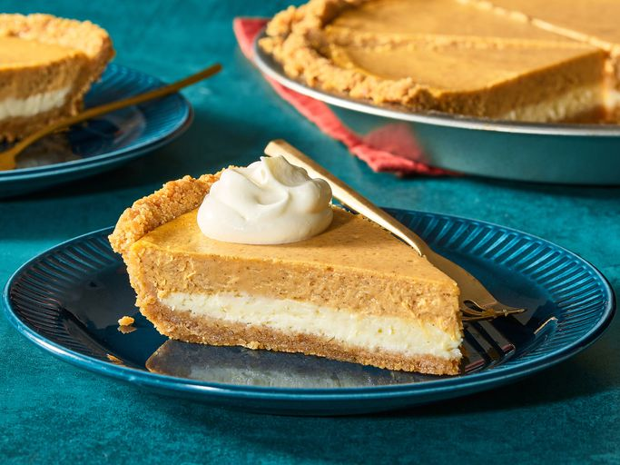

Cheesecake
Go back
Cheesecake is a rich and creamy dessert made with cream cheese, sugar, and eggs, set on a graham cracker crust. It's a versatile dessert that can be flavored with various ingredients like chocolate, fruit, or caramel. The smooth texture and sweet flavor make it a favorite for many.
Ingredients:
- Graham cracker crumbs
- Butter
- Sugar
- Cream cheese
- Sour cream
- Vanilla extract
- Eggs
Steps:
- Preheat the oven to 325°F (160°C).
- In a bowl, mix graham cracker crumbs, melted butter, and sugar.
- Press the mixture into the bottom of a springform pan to form the crust.
- In another bowl, beat cream cheese until smooth.
- Add sour cream, sugar, and vanilla extract; mix until well combined.
- Add eggs one at a time, mixing well after each addition.
- Pour the filling over the crust in the springform pan.
- Bake for 50-60 minutes until set and slightly golden on top.
- Let it cool before refrigerating for at least 4 hours before serving.
